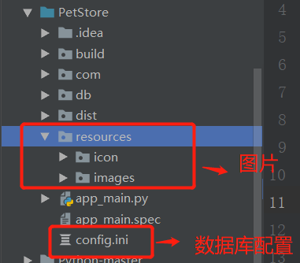

Contents
14.8. 使用PyInstaller生成可执行程序¶
14.8.1. 安装PyInstaller¶
pip install pyinstaller
或者
pip install -upgrade pyinstaller
14.8.2. 生成可执行程序¶
Pyinstaller工具的命令语法如下：
pyinstaller 选项 Python源文件
不管这个Pyhton应用是单文件的应用，还是多文件的应用，只要在使用pyinstaller命令时编译作为程序入口的Python程序即可。
pyinstaller -F -w command_test.py
-F 选项指定生成单个的可执行程序，
-w 选项指定生成图形用户界面程序（不需要命令行界面）
pyinstaller -D -w command_test.py
-D 选项产生一个目录（包含多个文件）作为可执行程序
1.打包多个py文件并且去除cmd黑框
格式：pyinstaller.exe -F 路径\文件名.py 路径\文件名.py --noconsole
在我们打包的时候：如果是直接指定python文件进行pyinstaller打包的话，需要添加--noconsole
例如：pyinstaller -F mycode.py --noconsole
或者如下
pyinstaller -F -w mycode.py （-w就是取消窗口）
pyinstaller -D code.py
pyinstaller -F code.py
pyinstaller -w -F code.py
pyinstaller打包教程
方法如下：
1.确保已安装python解释器
2.确认pip是否是最新版本
python -m pip install --upgrade pip
3.安装pyinstaller
pip install pyinstaller
4.使用pyinstaller打包程序
在要打包的python文件的目录下执行如下命令：
pyinstaller -F -i res\app.ico 你的python文件名.py
其中res目录为你的项目文件下的资源目录，项目中用到的图片均放置在里面，其中app.ico是生成你的可执行文件的图标。
5.拷贝资源文件目录res到生成目录下的dist目录下
执行dist目录下的exe文件，打包完成。
6.如果你想加个图标、取消运行时跳出控制台:
python pyinstaller.py -w --onefile --icon="my.ico" sspw.py
后记：
1.程序设置自定义图标：pyinstaller -F -i ico_path py_path
首先需要下载一张正常的ico，不能用直接修改后缀的。
下载图片： https://www.easyicon.net
图片改为ico: http://www.ico.la/
输入命令 pyinstaller -F -i "demo.ico" "main.py"
2.报错提示：
pyinstaller -F -i "demo.ico" "main.py" 命令格式一定是先图标路径，再程序路径。
路径最好为英文，没有中文字符；脚本名称里没有特殊字符如 .
使用utf8编码
图标文件必须是正常格式，不能直接更改后缀。
tuble index out of range ---》pyinstaller版本尚未支持python的版本
3.窗口程序
使用 pyinstaller -F -w -i ico_path py_path ，这样脚本不会弹出命令窗，前提是用了GUI库.
4.导入模块问题
pyinstaller -F -w -i --hidden-import queue ico_path py_path 加上选项
打包一个大型项目¶
pip install pyinstaller
项目结构图
# 可以使用 pyi-makespec 命令生成规范文件，本项目的主模块是app_main.py,使用命令如下：
pyi-makespec app_main.py
# 如果要加上图标，打包成一个单一文件，使用如下：
pyi-makespec -F -i D:\downloads\cat001.ico app_main.py
可以通过pyi-makespec demo.py来生成demo.spec文件。
打包图标如果出现如下报错
from_buffer() cannot return the address of the raw string within a str or unicode or bytearray object
网上看了一下，一般setuptools运行完就可以打包程序了，可能这是python3.5的bug？通过大神一顿操作分析，我得知问题在于日志信息中的cffi报错，于是安装了cffi
pip install --upgrade cffi
然后在当前目录下生成app_main.spec文件。
# -*- mode: python -*-
block_cipher = None
a = Analysis(['app_main.py'],
pathex=['D:\\GitHub\\PetStore'],
binaries=[],
datas=[],
............
dates变量可以设置要添加的资源文件，修改app_main.spec文件内容如下：
# -*- mode: python -*-
block_cipher = None
added_files = [ ('resources', 'resources'),
('config.ini', '.')
]
a = Analysis(['app_main.py'],
pathex=['D:\\GitHub\\PetStore'],
binaries=[],
datas=added_files,
....................
发布成功之后，exe文件生成目录：PetStore:raw-latex:dist_main下 app_main.exe
pyinstaller app_main.spec
打包exe的命令如下：
pyinstaller -F k:/exedemo1/geometric.py --distpath k:/exedemo1 --icon k:/exedemo1/b1.ico
--distpath k:/exedemo1用于指定.exe的存储路径
--icon k:/exedemo1/b1.ico用于指定.exe文件的图标，即不使用默认图标。
参考文献：
https://shazhenyu.blog.csdn.net/article/details/104054250
http://blog.itpub.net/26736162/viewspace-2644904/
https://www.cnblogs.com/gopythoner/p/6337543.html
https://www.jianshu.com/p/48f6dea265eb
使用pyinstaller将pyqt5打包成exe格式
https://blog.csdn.net/qq_40587575/article/details/85076934
https://blog.csdn.net/wolencoder/article/details/80557311
https://blog.csdn.net/qq_27197395/article/details/83411114